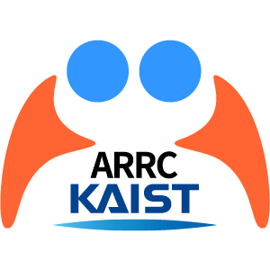

<!doctype html>
<html lang="ko">
<meta charset="utf-8">
<title>KAIST ARRC 공유 이미지</title>
<style>
*{box-sizing:border-box}body{margin:0;width:1200px;height:630px;background:#fff;color:#08396e;font-family:'Malgun Gothic',sans-serif}
main{height:630px;padding:38px 48px;border-top:9px solid #08396e}
header{display:flex;align-items:center;gap:24px;height:46px}header img{width:146px;height:auto}header img+img{width:62px}header span{margin-left:auto;font-size:22px;font-weight:700}
.hero{display:grid;grid-template-columns:1fr 500px;gap:28px;margin-top:30px;align-items:center}
.eyebrow{font-size:19px;font-weight:700;margin:0 0 12px;color:#0c5ca9}
h1{font-size:54px;line-height:1.25;letter-spacing:-2.5px;margin:0;font-weight:900}h1 em{font-style:normal;color:#0c5ca9}
.program{font-size:17px;line-height:1.5;margin:17px 0 0;color:#61788f}
.photo{width:500px;height:292px;object-fit:cover}
footer{display:grid;grid-template-columns:1fr 1fr;margin-top:30px;gap:14px}footer div{padding:18px 24px;background:#08396e;color:white}footer div+div{background:#fff0b8;color:#08396e}footer span{display:block;font-size:18px;margin-bottom:4px}footer strong{font-size:31px;letter-spacing:-.8px}
</style>
<main>
<header><span>KAIST 학부생·대학원생 대상</span></header>
<section class="hero"><div><p class="eyebrow">2026 XR·AI 아이디어 해커톤</p><h1>XR·AI로,<br>사람과 사람을<br><em>더 가깝게.</em></h1><p class="program">Symbiotic AIR4BTS<br>Winter Research Talent Program</p></div></section>
<footer><div><span>현장 해커톤 · KAIST</span><strong>11월 21–22일</strong></div><div><span>신청·아이디어 제출 마감</span><strong>11월 6일까지</strong></div></footer>
</main>
</html>
